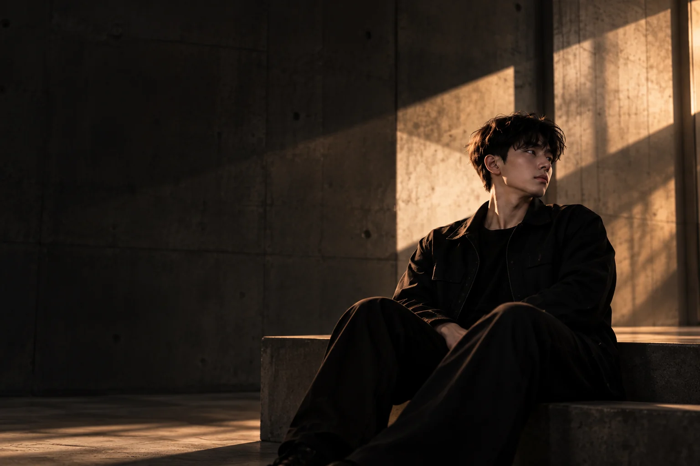

Lim Ziwei.
Turning data into insights,
building solutions, and exploring
what comes next.
01 / THE PERSON
Always curious.Never quite finished.
More than
just data.
I’m Lim Ziwei, a Data Science student at TAR UMT. I’m passionate about turning data into meaningful insights and building solutions that solve real-world problems.
Somewhere between a good question and a working solution is where I like to be.
solver
learner
player
impact

THE CURIOSITY BEHIND THE CODEEDUCATIONTAR UMTBachelor of Data Science
Currently studying
LOCATIONMalaysia
LANGUAGESEnglish · Mandarin · Malay
OFFLINEFootball, games & photographyAnd finding somewhere new.
02 / SELECTED EXPLORATIONS
From a questionto something real.
Turning ideas
into real projects.
A collection of academic projects,
personal exploration, and ongoing work
in data science, AI, and beyond.
03 / THROUGH MY LENS
People. Places.The in-between.
Moments
outside the screen.
A space for the places, small details, and everyday moments that catch my eye.
My photographs will be added here soon.
04 / OFF THE CLOCK
A different kindof energy.
Beyond
the screen.
Badminton. Volleyball. Football. A space for the sports I enjoy, and the other interests that keep life interesting.
ON THE COURT · ON THE PITCH
Sports moments and personal stories will join this space.
05 / CURIOSITY, HANDS ON
Try. Reset.Try again.
A little less watching.
A little more doing.
Small experiments to explore at your own pace. No account, no leaderboard—just room to play.
02 / REFLEX CHECK
Ready when
you are.
Complete five rounds. Press Start, then wait for “Go”. Tap the pad or press Space while it is focused. React early and you can try again.
A browser-based game, not a scientific measurement. Device and input delays affect the result.Your next round starts here.
06 / THE GAMES SHELF
Good company.Interesting moves.
Take a seat.
Make your move.
Step inside, pick a box from the cabinet, and settle into a game. Every box opens a different table.
MAKE YOURSELF AT HOME
Three doors.
Your kind of escape.
A quiet story, a shared table, or another world. Where would you like to go?
Another world.
One game away.
Games from my collection. Select a game to read about it here. Playtime and achievements are not tracked.
07 / THE READING ROOM
A quieter kindof discovery.
Between
the pages.
Stories and ideas to explore. Open a book for a short, spoiler-light introduction.
ON THE SHELF
A story about seeing
through another’s eyes.
Explore its setting, central ideas, and a question to take away.
The collection starts here. More books can be added over time.08 / THE NEXT CHAPTER
Let’s build
something
together.
Open to meaningful collaborations,
and interesting projects. Let’s see where an idea can go.